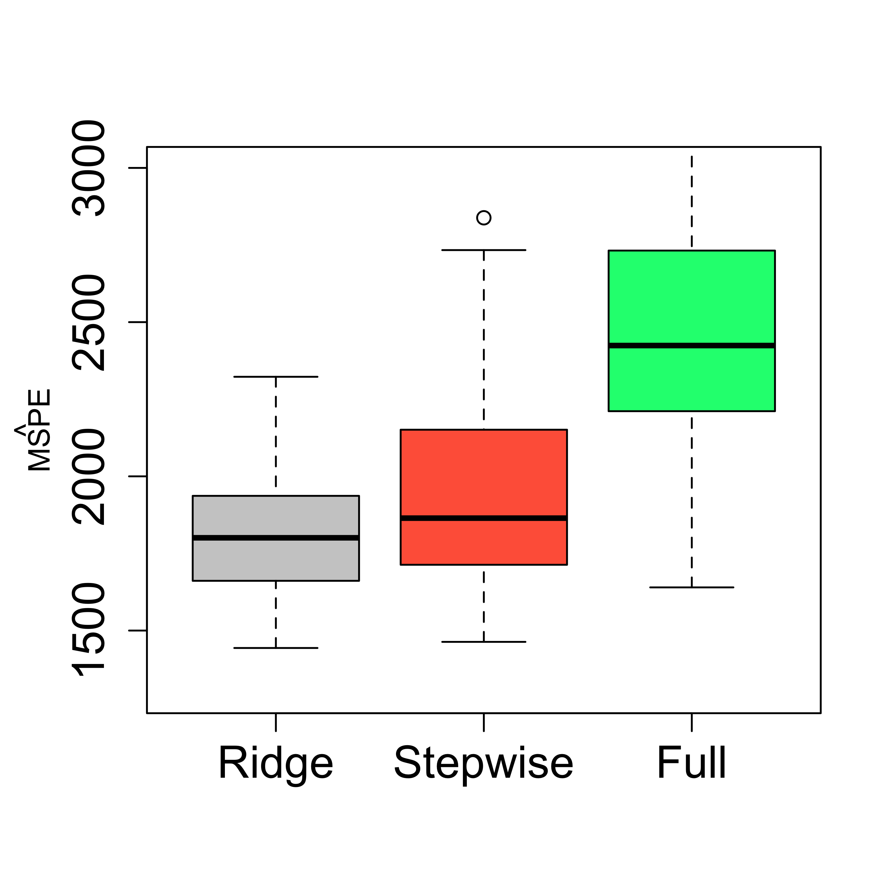
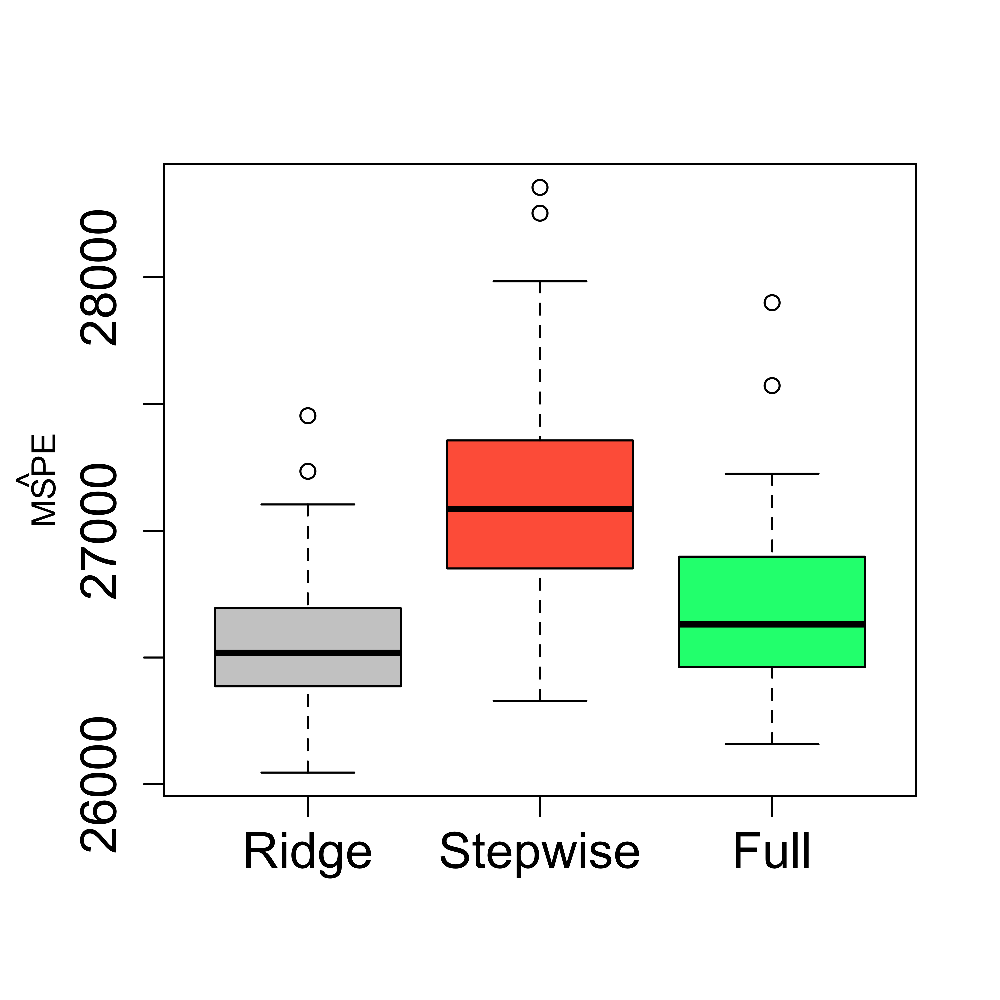

airp <- read.table("data/rutgers-lib-30861_CSV-1.csv", header = TRUE, sep = ",")
library(MASS)
k <- 5
n <- nrow(airp)
set.seed(123456)
ii <- sample((1:n) %% k + 1)
for (j in 1:k) {
x0 <- airp[ii != j, ]
null0 <- lm(MORT ~ 1, data = x0)
full0 <- lm(MORT ~ ., data = x0) # needed for stepwise
step.lm0 <- stepAIC(null0,
scope = list(lower = null0, upper = full0),
trace = FALSE
)
print(formula(step.lm0)[[3]])
}
#> NONW + EDUC + JANT + OVR65 + SO.
#> NONW + EDUC + PREC + SO. + JULT
#> NONW + EDUC + JANT + SO. + PREC
#> NONW + SO. + JANT + PREC + DENS
#> NONW + JANT + EDUC + DENS + POPN + JULT + PREC + OVR655 Ridge regression
Variable selection methods like stepwise can be highly variable. To illustrate this issue consider the following simple experiment. As before, we apply stepwise on 5 randomly selected folds of the data, and look at the models selected in each of them.
Although many variables appear in more than one model, only NONW and SO. are in all of them, and JANT and PREC in 4 out of the 5. There are also several that appear in only one model (HOUS, WWDRK and POPN). This variability may in turn impact (negatively) the accuracy of the resulting predictions.
A different approach to dealing with potentially correlated explanatory variables (with the goal of obtaining less variable / more accurate predictions) is to “regularize” the parameter estimates. In other words we modify the optimization problem that defines the parameter estimators (in the case of linear regression fits we tweak the least squares problem) to limit their size (in fact restricting them to be in a bounded and possibly small subset of the parameter space).
The first proposal for a regularized / penalized estimator for linear regression models is Ridge Regression. We will use the function glmnet in package glmnet to compute the Ridge Regression estimator. Note that this function implements a larger family of regularized estimators, and in order to obtain a Ridge Regression estimator we need to set the argument alpha = 0 of glmnet(). We also specify a range of possible values of the penalty coefficient (below we use a grid of 50 values between exp(-3) and exp(10)).
library(glmnet)
# alpha = 0 - Ridge
# alpha = 1 - LASSO
y <- as.vector(airp$MORT)
xm <- as.matrix(airp[, -16])
lambdas <- exp(seq(-3, 10, length = 50))
a <- glmnet(
x = xm, y = y, lambda = rev(lambdas),
family = "gaussian", alpha = 0
)The returned object contains the estimated regression coefficients for each possible value of the regularization parameter. We can look at them using the plot method for objects of class glmnet as follows:
plot(a, xvar = "lambda", label = TRUE, lwd = 6, cex.axis = 1.5, cex.lab = 1.2, ylim = c(-20, 20))
5.1 Selecting the level of regularization
Different values of the penalization parameter will typically yield estimators with varying predictive accuracies. To select a good level of regularization we estimate the MSPE of the estimator resulting from each value of the penalization parameter. One way to do this is to run K-fold cross validation for each value of the penalty. The glmnet package provides a built-in function to do this, and a plot method to display the results:
# run 5-fold CV
set.seed(123)
tmp <- cv.glmnet(x = xm, y = y, lambda = lambdas, nfolds = 5, alpha = 0, family = "gaussian")
plot(tmp, lwd = 6, cex.axis = 1.5, cex.lab = 1.2)
In the above plot the red dots are the estimated MSPE’s for each value of the penalty, and the vertical lines mark plus/minus one (estimated) standard deviations (for each of those estimated MSPE’s). The plot method will also mark the optimal value of the regularization parameter, and also the largest one for which the estimated MSPE is within 1-SD of the optimal. The latter is meant to provide a more regularized estimator with estimated MSPE within the error-margin of our estimated minimum.
Note, however, that the above “analysis” is random (because of the intrinsic randomness of K-fold CV). If we run it again, we will most likely get different results. In many cases, however, the results will be qualitatively similar. If we run 5-fold CV again for this data get the following plot:
set.seed(23)
tmp <- cv.glmnet(x = xm, y = y, lambda = lambdas, nfolds = 5, alpha = 0, family = "gaussian")
plot(tmp, lwd = 6, cex.axis = 1.5, cex.lab = 1.2)
Note that both plots are similar, but not equal. It would be a good idea to repeat this a few times and explore how much variability is involved. If one were interested in selecting one value of the penalization parameter that was more stable than that obtained from a single 5-fold CV run, one could run it several times and take the average of the estimated optimal values. For example:
set.seed(123)
op.la <- 0
for (j in 1:20) {
tmp <- cv.glmnet(x = xm, y = y, lambda = lambdas, nfolds = 5, alpha = 0, family = "gaussian")
op.la <- op.la + tmp$lambda.min # tmp$lambda.1se
}
(op.la <- op.la / 20)
#> [1] 11.44547
log(op.la)
#> [1] 2.437594This value is reasonably close to the ones we saw in the plots above.
5.2 Comparing predictions
We now run a cross-validation experiment to compare the MSPE of 3 models: the full model, the one selected by stepwise and the ridge regression one.
n <- nrow(xm)
k <- 5
ii <- (1:n) %% k + 1
set.seed(123)
N <- 100
mspe.st <- mspe.ri <- mspe.f <- rep(0, N)
for (i in 1:N) {
ii <- sample(ii)
pr.f <- pr.ri <- pr.st <- rep(0, n)
for (j in 1:k) {
tmp.ri <- cv.glmnet(
x = xm[ii != j, ], y = y[ii != j], lambda = lambdas,
nfolds = 5, alpha = 0, family = "gaussian"
)
null <- lm(MORT ~ 1, data = airp[ii != j, ])
full <- lm(MORT ~ ., data = airp[ii != j, ])
tmp.st <- stepAIC(null, scope = list(lower = null, upper = full), trace = 0)
pr.ri[ii == j] <- predict(tmp.ri, s = "lambda.min", newx = xm[ii == j, ])
pr.st[ii == j] <- predict(tmp.st, newdata = airp[ii == j, ])
pr.f[ii == j] <- predict(full, newdata = airp[ii == j, ])
}
mspe.ri[i] <- mean((airp$MORT - pr.ri)^2)
mspe.st[i] <- mean((airp$MORT - pr.st)^2)
mspe.f[i] <- mean((airp$MORT - pr.f)^2)
}
boxplot(mspe.ri, mspe.st, mspe.f,
names = c("Ridge", "Stepwise", "Full"),
col = c("gray80", "tomato", "springgreen"), cex.axis = 1.5, cex.lab = 1.5,
cex.main = 2, ylim = c(1300, 3000)
)
mtext(expression(hat(MSPE)), side = 2, line = 2.5)
5.3 A more stable Ridge Regression?
Here we try to obtain a ridge regression estimator with more stable predictions by using the average optimal penalty value using 20 runs. The improvement does not appear to be substantial.
n <- nrow(xm)
k <- 5
ii <- (1:n) %% k + 1
set.seed(123)
N <- 100
mspe.ri2 <- rep(0, N)
for (i in 1:N) {
ii <- sample(ii)
pr.ri2 <- rep(0, n)
for (j in 1:k) {
op.la <- 0
for (h in 1:20) {
tmp <- cv.glmnet(x = xm, y = y, lambda = lambdas, nfolds = 5, alpha = 0, family = "gaussian")
op.la <- op.la + tmp$lambda.min # tmp$lambda.1se
}
op.la <- op.la / 20
tmp.ri <- cv.glmnet(
x = xm[ii != j, ], y = y[ii != j], lambda = lambdas, nfolds = 5,
alpha = 0, family = "gaussian"
)
pr.ri2[ii == j] <- predict(tmp.ri, s = op.la, newx = xm[ii == j, ])
}
mspe.ri2[i] <- mean((airp$MORT - pr.ri2)^2)
}
boxplot(mspe.ri2, mspe.ri, mspe.st, mspe.f,
names = c("Stable R", "Ridge", "Stepwise", "Full"),
col = c("steelblue", "gray80", "tomato", "springgreen"), cex.axis = 1.5, cex.lab = 1.5,
cex.main = 2, ylim = c(1300, 3000)
)
mtext(expression(hat(MSPE)), side = 2, line = 2.5)
5.4 An example where one may not need to select variables
In some cases one may not need to select a subset of explanatory variables, and in fact, doing so may affect negatively the accuracy of the resulting predictions. In what follows we discuss such an example. Consider the credit card data set that contains information on credit card users. The interest is in predicting the balance carried by a client. We first load the data, and to simplify the presentation here we consider only the numerical explanatory variables:
x <- read.table("data/Credit.csv", sep = ",", header = TRUE, row.names = 1)
x <- x[, c(1:6, 11)]There are 6 available covariates, and a stepwise search selects a model with 5 of them (discarding Education):
library(MASS)
null <- lm(Balance ~ 1, data = x)
full <- lm(Balance ~ ., data = x)
(tmp.st <- stepAIC(null, scope = list(lower = null, upper = full), trace = 0))
#>
#> Call:
#> lm(formula = Balance ~ Rating + Income + Limit + Age + Cards,
#> data = x)
#>
#> Coefficients:
#> (Intercept) Rating Income Limit Age Cards
#> -449.3610 2.0224 -7.5621 0.1286 -0.8883 11.5527It is an easy exercise to check that the MSPE of this smaller model is in fact worse than the one for the full one:
n <- nrow(x)
k <- 5
ii <- (1:n) %% k + 1
set.seed(123)
N <- 100
mspe.st <- mspe.f <- rep(0, N)
for (i in 1:N) {
ii <- sample(ii)
pr.f <- pr.st <- rep(0, n)
for (j in 1:k) {
null <- lm(Balance ~ 1, data = x[ii != j, ])
full <- lm(Balance ~ ., data = x[ii != j, ])
tmp.st <- stepAIC(null, scope = list(lower = null, upper = full), trace = 0)
pr.st[ii == j] <- predict(tmp.st, newdata = x[ii == j, ])
pr.f[ii == j] <- predict(full, newdata = x[ii == j, ])
}
mspe.st[i] <- mean((x$Balance - pr.st)^2)
mspe.f[i] <- mean((x$Balance - pr.f)^2)
}
boxplot(mspe.st, mspe.f,
names = c("Stepwise", "Full"),
col = c("tomato", "springgreen"), cex.axis = 1.5,
cex.lab = 1.5, cex.main = 2
)
mtext(expression(hat(MSPE)), side = 2, line = 2.5)
Using ridge regression instead of stepwise to prevent the negative effect of possible correlations among the covariates yields a slight improvement (over the full model), but it is not clear the gain is worth the effort.
y <- as.vector(x$Balance)
xm <- as.matrix(x[, -7])
lambdas <- exp(seq(-3, 10, length = 50))
n <- nrow(xm)
k <- 5
ii <- (1:n) %% k + 1
set.seed(123)
N <- 100
mspe.st <- mspe.ri <- mspe.f <- rep(0, N)
for (i in 1:N) {
ii <- sample(ii)
pr.f <- pr.ri <- pr.st <- rep(0, n)
for (j in 1:k) {
tmp.ri <- cv.glmnet(
x = xm[ii != j, ], y = y[ii != j], lambda = lambdas,
nfolds = 5, alpha = 0, family = "gaussian"
)
null <- lm(Balance ~ 1, data = x[ii != j, ])
full <- lm(Balance ~ ., data = x[ii != j, ])
tmp.st <- stepAIC(null, scope = list(lower = null, upper = full), trace = 0)
pr.ri[ii == j] <- predict(tmp.ri, s = "lambda.min", newx = xm[ii == j, ])
pr.st[ii == j] <- predict(tmp.st, newdata = x[ii == j, ])
pr.f[ii == j] <- predict(full, newdata = x[ii == j, ])
}
mspe.ri[i] <- mean((x$Balance - pr.ri)^2)
mspe.st[i] <- mean((x$Balance - pr.st)^2)
mspe.f[i] <- mean((x$Balance - pr.f)^2)
}
boxplot(mspe.ri, mspe.st, mspe.f,
names = c(
"Ridge", "Stepwise",
"Full"
), col = c("gray80", "tomato", "springgreen"), cex.axis = 1.5,
cex.lab = 1.5, cex.main = 2
)
mtext(expression(hat(MSPE)), side = 2, line = 2.5)
5.5 An important limitation of Ridge Regression
Ridge Regression typically yields estimators with more accurate (less variable) predictions, specially when there is noticeable correlation among covariates. However, it is important to note that Ridge Regression does not select variables, and in that sense it does not “replace” methods like stepwise when the interest is in using a smaller number of explanatory variables. Furthermore, the interpretation of the Ridge Regression coefficient estimates is generally difficult. LASSO regression estimates were proposed to address these two issues (more stable predictions when correlated covariates are present and variable selection) simultaneously.
5.6 Effective degrees of freedom
Intuitively, if we interpret “degrees of freedom” as the number of “free” parameters that are available to us for tuning when we fit / train a model or predictor, then we would expect a Ridge Regression estimator to have less “degrees of freedom” than a regular least squares regression estimator, given that it is the solution of a constrained optimization problem. This is, of course, an informal argument, particularly since there is no proper definition of “degrees of freedom”.
The more general definition discussed in class, called “effective degrees of freedom” (EDF), reduces to the trace of the “hat” matrix for any linear predictor (including, but not limited to, linear regression models), and is due to Efron (Efron 1986). You may also want to look at some of the more recent papers that cite the one above.
It is easy (but worth your time doing it) to see that for a Ridge Regression estimator computed with a penalty / regularization parameter equal to b, the corresponding EDF are the sum of the ratio of each eigenvalue of X’X with respect to itself plus b (see the formula on the lecture slides). We compute the EDF of the Ridge Regression fit to the air pollution data when the penalty parameter is considered to be fixed at the average optimal value over 20 runs of 5-fold CV:
airp <- read.table("data/rutgers-lib-30861_CSV-1.csv", header = TRUE, sep = ",")
y <- as.vector(airp$MORT)
xm <- as.matrix(airp[, -16])
library(glmnet)
lambdas <- exp(seq(-3, 10, length = 50))
set.seed(123)
op.la <- 0
for (j in 1:20) {
tmp <- cv.glmnet(x = xm, y = y, lambda = lambdas, nfolds = 5, alpha = 0, family = "gaussian")
op.la <- op.la + tmp$lambda.min # tmp$lambda.1se
}
op.la <- op.la / 20
xm <- scale(as.matrix(airp[, -16]), scale = FALSE)
xm.svd <- svd(xm)
(est.edf <- sum(xm.svd$d^2 / (xm.svd$d^2 + op.la)))
#> [1] 12.995955.7 Important caveat!
Note that in the above discussion of EDF we have assumed that the matrix defining the linear predictor does not depend on the values of the response variable (that it only depends on the matrix X), as it is the case in linear regression. This is fine for Ridge Regression estimators as long as the penalty parameter was not chosen using the data. This is typically not the case in practice. Although the general definition of EDF still holds, it is not longer true that Ridge Regression yields a linear predictor, and thus the corresponding EDF may not be equal to the trace of the corresponding matrix.